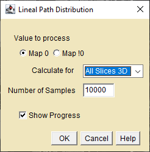

Plugins for computing Two-Point, Lineal Path, Chord Length, and Pore Size Distributions.
Two Point Correlation Dialog
Two Point Correlation Plot
Two Point Slice Data

Lineal Path Dialog
Lineal Path Plot
Chord Length Dialog
Chord Length Plot
Pore Size Dialog
Pore Size Plot
Step 2. Apply Linearization(right)
Sinogram Choice - select the sinogram used to reconstruct the
beam-hardened slice.
Results Choice - Select the Fit Parameters Results window.
Fit Choice - Select the polynomial to apply to the sinogram. The fit coefficients will be imported from the Fit Parameters window.
A0 to A6 - Edit the polynomial coefficients if needed.
Use Scale Factor - Check this box if your sinogram has been
scaled from 32 to 16bit
Scale Factor - Enter the factor used to scale the sinogram.
Ignored if Use is not checked.
Create new image -recommended, otherwise the original sinogram
will be overwritten..
Click OK to apply the correction to the sinogram. Reconstruct and
observe the result. Check the consistency of the reconstructed
attenuations using the
Xray Lookup MuLin
and
Xray Lookup Ratio
plugins. The X-ray energies reported from the corrected attenuations
should be approximately the same. Remember that the correction
polynomial is a "fit" to the observed data. If there is a lot of scatter
around the fit then the corrected attenuations will be less accurate.